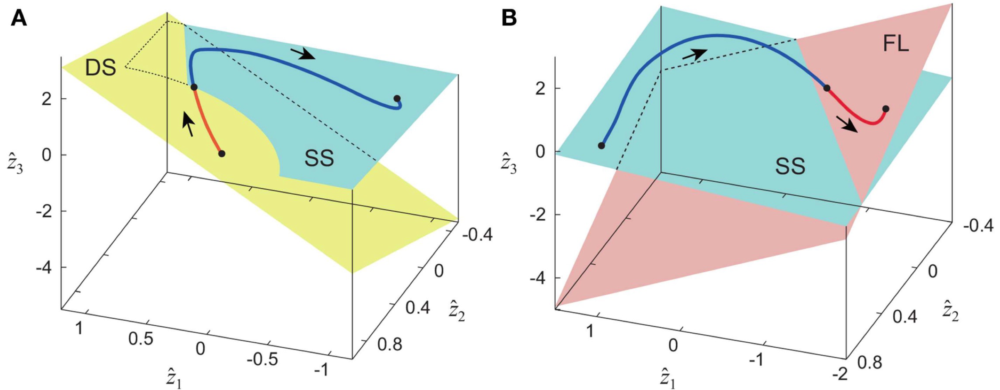
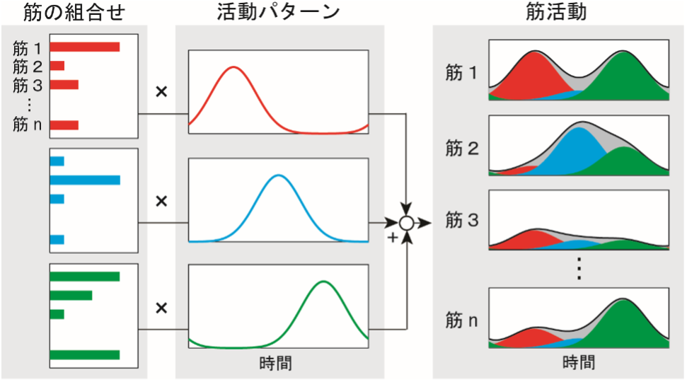
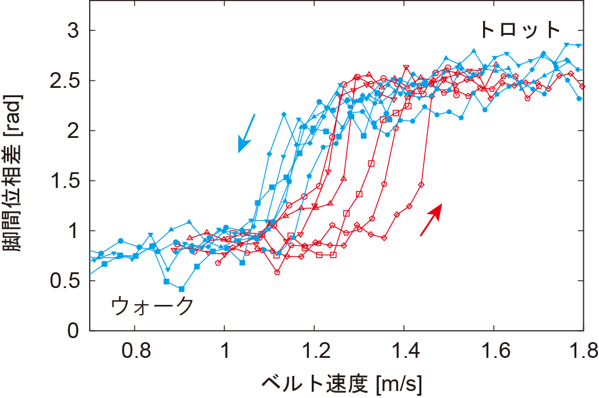
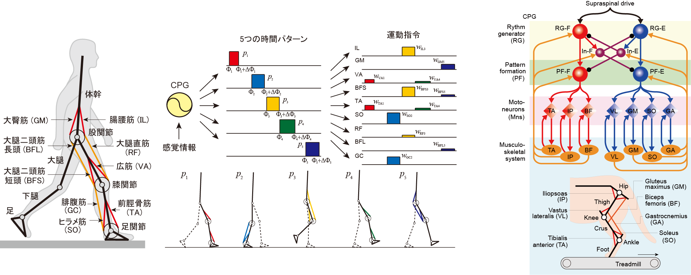
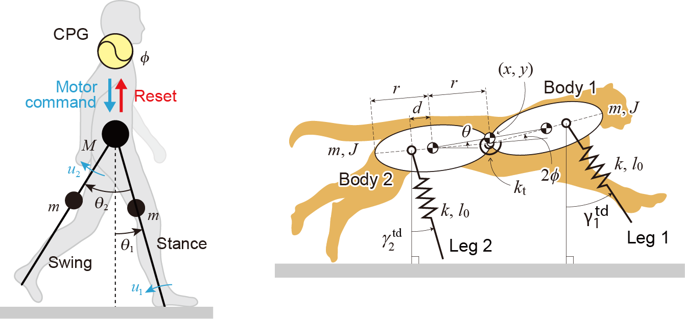

本研究室の研究テーマは、大きく分けて次の3つに分類される。
ただし、研究内容によっては、これらを統合的に実施している。1．運動解析
ヒトや動物の有する優れた運動知能の解明に向けて、運動中の関節角度、筋電図、床反力などを計測し、様々な数理的解析手法を駆使して、計測データに内在するデータ構造を読み解く。 得られた結果から、優れた運動機能を実現する神経制御系について考察し、仮説を提案する。
1－1．運動学シナジー
ヒトや動物は、運動に必要な自由度よりも遙かに多い冗長な自由度を用いて運動を形成している。 しかしながら、全ての自由度を独立に制御するのではなく、複数の自由度に何らかの関係（拘束条件）を与えることで自由度を低減し、少数の自由度を制御することで運動を形成していると示唆されている。 例えば、大腿・下腿・足の3つの仰角を軸として、角度データを歩行1周期にわたってプロットすると、ほぼ3次元上の平面に載ることが知られている（Bianchi et al., 1998）。 これは、股関節・膝関節・足関節の3つの運動が、歩行中ある線形の関係を保ちながら共に変化するような協調構造を有していることを示唆しており、このような複数の関節運動に内在する低次元構造は運動学シナジーと呼ばれる。 特異値分解などの数理的手法を用いてこのような低次元構造を明らかにし、それを実現する神経制御系について考察する。
下図は、ヒトの歩行（A）と走行（B）において、体幹と左右脚3部位の合計7つの運動（7次元）が、歩容に依存した片足支持期（SS）と両足支持期（DS）、そして跳躍期（FL）のそれぞれにおいて、平面（2次元）の運動として説明できることを明らかにしたものである（Oshima et al., 2019）。

1－2．筋シナジー
関節の運動を作り出す筋は、更に多くの自由度を有している。 下図のように、歩行中の多くの筋の活動は、タイミングの異なる少数の活動パターンの線形和として説明できることが知られており（Ivanenko et al., 2004）、このような複数の筋活動に内在する低次元構造は筋シナジーと呼ばれる。 非負値行列因子分解などの数理的手法を用いてこのような低次元構造を明らかにし、それを実現する神経制御系について考察する。

1－3．肢間協調
ヒトは歩行や走行において、左右の脚を交互に動かし、状況に応じて左右の位相関係を変化させる。 四足動物や多くの脚を持つ節足動物は、速度に応じてそれぞれの脚の位相関係を変化させる。 四足動物の低速時のウォーク（四肢を一本ずつ動かす）や中速時のトロット（右前肢と左後肢など対角の脚を同時に動かす）、そして高速時のギャロップ（四肢をバラバラに動かすが、全ての脚が空中にある期間が存在する）などがその一例である。 速度変化や環境変化に応じた適応的な歩行には、肢間の適切な位相関係、すわなち、肢間協調が不可欠である。 非線形振動子の位相縮約理論などの数理的手法を用いて歩行中の肢間協調を明らかにし、それを実現する神経制御系について考察する。
下図は、イヌのトレッドミル上での歩行において、ベルト速度の加速時にウォークからトロットに遷移する速度と、減速時にトロットからウォークに遷移する速度が異なるヒステリシスを生じることを明らかにしたものである（Aoi et al., 2013）。

2．数理モデリング
歩行とは、脳神経系と身体筋骨格系、そして環境との相互作用を介して実現される複雑な力学現象であり、運動解析のみからその全体像を理解するには限界がある。 数理モデルを用いた動力学シミュレーションや力学系理論解析より、適応的な歩行が形成されるメカニズムを解き明かす。
2－1．神経筋骨格モデル
計算論的神経科学や仮説に基づく神経制御系の数理モデルと、解剖学や生体力学に基づく身体筋骨格系の数理モデルを統合した神経筋骨格モデルを用いた動力学シミュレーションより、生物の歩行を再現する。 生物の運動計測では実施困難なパラメータ依存性の調査などを含む力学解析を介して仮説を検証し、優れた歩行機能を実現する神経筋骨格系の数理構造を明らかにする。
左下図は筋シナジーに基づく神経制御系をモデル化した、ヒトの歩行・走行を実現する神経筋骨格モデル（Aoi et al., 2019）、右下図は階層的な構造を持つ脊髄のCPG（中枢パターン生成器）をモデル化した、ネコ後肢の神経筋骨格モデル（Kim et al., 2022）を示している。

2－2．シンプルモデル
生物の歩行機能を説明する必要最小限の数理モデルを構築し、その機能を実現する本質的な力学原理を明らかにする。
左下図はコンパス型の身体モデルを用いたヒトの歩行モデル（Okamoto et al., 2022）、右下図は体幹の曲げ伸ばしに着目した２つの剛体とバネからなるチーターのギャロップモデル（Kamimura et al., 2022）を示している。

3．ロボット実験
運動解析や数理モデリングより明らかになる知見を工学的に具現化することで、優れた歩行機能を示すロボットを開発する。
3－1．二足ロボット
左下の動画は、ニホンザルの四足歩行から二足歩行へ遷移する方策や、運動学シナジーの低次元構造に基づく運動計画、そしてCPGの接地感覚情報に基づく運動調整を利用して、四足歩行から二足歩行へ遷移する様子を示している（Aoi et al., 2012）。 右下の動画は、左右分離型トレッドミルにおいて、左右のベルトが同じ速度から異なる速度に変わっても、CPGの接地感覚情報に基づく運動調整を利用して適応的に歩き続ける様子を示している（Fujiki et al., 2013）。
3－2．四足ロボット
左下の動画は、CPGの接地感覚情報に基づく運動調整を利用して、ウォークからトロットへ遷移する様子を示しており、イヌと同様、加速時と減速時に歩容の遷移する速度が異なるヒステリシスが生じる（Aoi et al., 2013）。 右下の動画は、二足ロボットと同様、左右分離型トレッドミルにおいて、左右のベルトが同じ速度から異なる速度に変わっても、CPGの接地感覚情報に基づく運動調整を利用して適応的に歩き続ける様子を示している（Aoi et al., 2022）。
3－3．多足ロボット
左下の動画は、回転バネを介してつなげられた多数の体節を持つ多足ロボットにおいて、直線歩行がホップ分岐を介して不安定化し、ムカデのような蛇行に遷移する様子を示している（Aoi et al., 2016）。 右下の動画は、ピッチフォーク分岐を介した不安定化による曲線歩行への遷移を利用して、ターゲットへと到達する様子を示している（Aoi et al., 2022）。